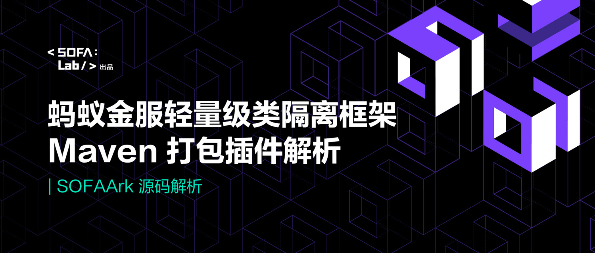
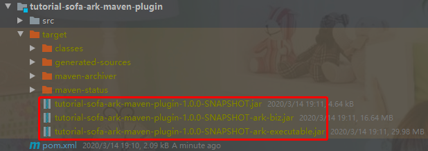
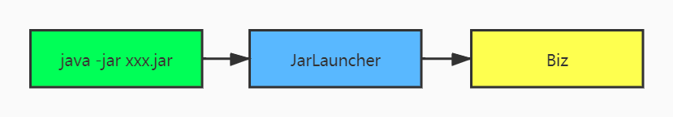
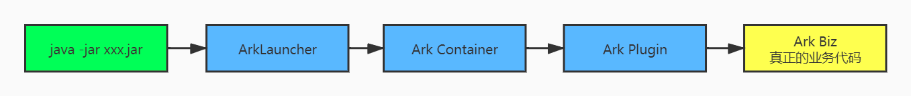
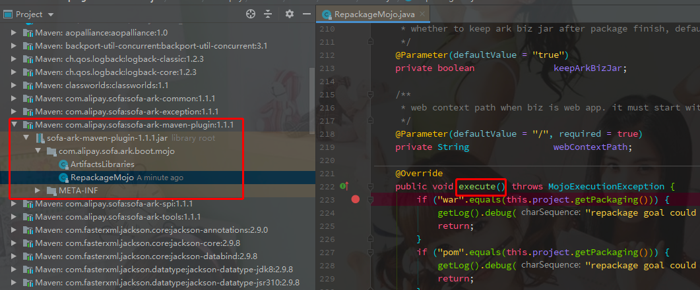
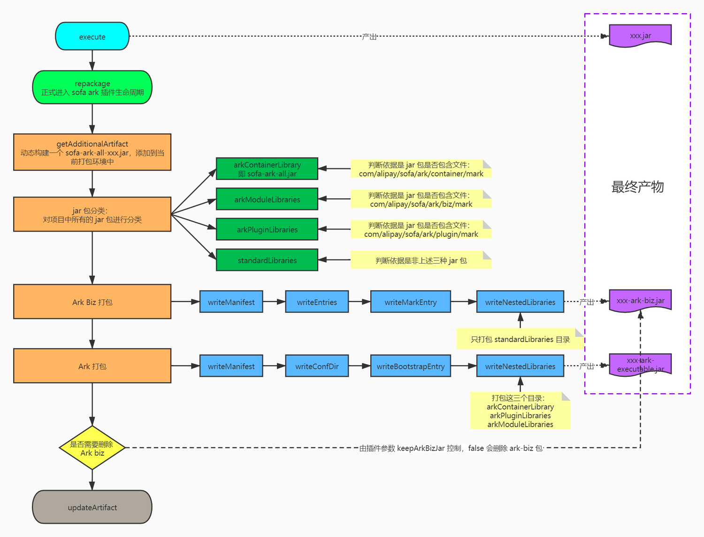

SOFAStack（Scalable Open Financial Architecture Stack）是蚂蚁金服自主研发的金融级云原生架构，包含了构建金融级云原生架构所需的各个组件，是在金融场景里锤炼出来的最佳实践。

本文为《剖析 | SOFAArk 实现原理》第二篇，本篇作者盲僧，来自 OYO。《剖析 | SOFAArk 实现原理》系列由 SOFA 团队和源码爱好者们出品，项目代号：SOFA:ArkLab/，文末附系列共建列表，目前已完成领取。
前言
SOFAArk 是 SOFA 团队开源的又一款扛鼎力作，它是一款基于 Java 实现的轻量级类隔离容器，主要提供类隔离和应用（模块）合并部署的能力。
从 2016 年底开始，蚂蚁金服内部开始拥抱新的轻量级类隔离容器框架-SOFAArk。截止 2021 年底，SOFAArk 已经在蚂蚁金服内部 Serverless 场景下落地实践，并已经有数家企业在生产环境使用 SOFAArk ，包括网易云音乐、挖财、溢米教育等。
本文主要介绍下 SOFAArk Biz 包的打包插件，帮助大家更好的去理解 Biz 包的结构，也是为系列文章做好铺垫。
SOFAArk Biz 的打包插件是 sofa-ark-maven-plugin ，它可以将普通 Java 工程或者 Spring Boot 工程打包成标准格式的 Ark 包或者 Ark Biz 包，关于 Ark 包和 Ark Biz 包可以参考这里：
- Ark 包：https://www.sofastack.tech/projects/sofa-boot/sofa-ark-ark-jar/
- Ark Biz：https://www.sofastack.tech/projects/sofa-boot/sofa-ark-ark-biz/
本文将从如下三个方面进行介绍：先对插件的使用和打包出来的产物做一个简单介绍，然后告诉大家调试插件的方法，最后对整个插件的原理做一个流程图和阐述。
SOFAArk ：https://github.com/sofastack/sofa-ark
SOFAArk 插件使用
文中的示例代码可以参考 我的 github。
插件使用
先将 Spring Boot 的打包插件 spring-boot-maven-plugin 删除或者注释，然后再引入如下插件即可：
<plugin>
<groupId>com.alipay.sofa</groupId>
<artifactId>sofa-ark-maven-plugin</artifactId>
<version>1.1.1</version>
<executions>
<execution>
<goals>
<goal>repackage</goal>
</goals>
</execution>
</executions>
</plugin>
执行 mvn package 命令后，将会打出如下结构的 3 个 jar 包，大家可以自行解压这三个 jar 包，看一看里面的具体内容，下面我们简单分析一下：

tutorial-sofa-ark-maven-plugin-1.0.0-SNAPSHOT.jar ：它是 maven 插件打出来的原生 jar 包，只包含我们写的代码和 manifest 文件，无特殊意义。
tutorial-sofa-ark-maven-plugin-1.0.0-SNAPSHOT-ark-biz.jar ：这个 jar 包称之为 Ark Biz 包，因为 SOFAArk 容器是支持运行多个 Ark Biz 的，所以打成这种包是为了和别的项目一起合并部署使用，另外 Ark 包里也包含了这个。
tutorial-sofa-ark-maven-plugin-1.0.0-SNAPSHOT-ark-executable.jar ：这个 jar 包称之为 Ark 包，从字面上来看它是一个可执行的 jar 包，即意味着它是一个可以用 java -jar 命令来单独运行的 Fat Jar，类似于我们用 Spring Boot 插件打出来的包。
后面的分析主要是围绕 Ark 包来做讲解，因为它包含了 Ark Biz 包，所以只要搞明白它是如何生成的，那么对整个插件的原理也就基本了解了。
与 Spring Boot 插件对比
要想分析出 sofa-ark-maven-plugin 插件的作用，我们需要先和 Spring Boot 的插件进行对比，从打包产物上直观的感受一下两者的区别。
spring-boot-maven-plugin 插件
spring-boot-maven-plugin 是 SpringBoot 默认提供的打包插件，其功能就是将工程打包成一个可执行的 FATJAR。spring-boot-maven-plugin 打包产物的目录结构如下：
.
├── BOOT-INF
│ ├── classes # 应用的字节码目录
│ └── lib # 应用所依赖的 jar 包
├── META-INF
│ ├── MANIFEST.MF # manifest 文件信息
│ └── maven # 应用的坐标信息
└── org
└── springframework
└── boot
└── loader # 存放的是 Spring Boot Loader 的 class 文件
├── JarLauncher.class # Spring Boot 启动类
├── archive
├── data
├── jar
└── util
MANIFEST.MF 文件内容：
Manifest-Version: 1.0
Archiver-Version: Plexus Archiver
Built-By: rrz
Start-Class: pers.masteryourself.tutorial.sofa.ark.maven.plugin.MavenP
luginApplication
Spring-Boot-Classes: BOOT-INF/classes/
Spring-Boot-Lib: BOOT-INF/lib/
Spring-Boot-Version: 2.1.4.RELEASE
Created-By: Apache Maven 3.5.3
Build-Jdk: 1.8.0_101
Main-Class: org.springframework.boot.loader.JarLauncher
MANIFEST.MF 文件中可以看到，描述了当前 jar 的一些核心元素，包括启动类、class 文件路径、lib 依赖路径、jdk 版本等等，这里需要关注的是 Main-Class，SpringBoot 就是通过该类来引导启动的。SOFAArk 应用也提供了类似的引导类及其自身特殊的结构，这主要就依托于 sofa-ark-maven-plugin 来完成的。
sofa-ark-maven-plugin 插件
关于 sofa-ark-maven-plugin 的使用方式可以参考官方文档进行配置，篇幅原因，这里不再赘述。下面就直接来看下 sofa-ark-maven-plugin 插件的打包产物及目录结构，然后类比于 SpringBoot 的 FatJar 结构来理解 SOFAArk 中的一些概念和逻辑。
.
├── SOFA-ARK
│ ├── biz
│ │ └── tutorial-sofa-ark-maven-plugin-1.0.0-SNAPSHOT-ark-biz.jar # Ark Biz 包
│ └── container
│ └── sofa-ark-all-1.1.1.jar # sofa ark 容器提供的包
├── META-INF
│ └── MANIFEST.MF # manifest 文件信息
└── com
└── alipay
└── sofa
└── ark
├── bootstrap
│ ├── ArkLauncher.class # SOFA Ark 启动类
├── common
│ ├── util
├── loader
│ ├── archive
│ ├── data
│ ├── jar
└── spi
├── archive
└── constant
MANIFEST.MF 文件内容：
Manifest-Version: 1.0
web-context-path: /
Archiver-Version: Plexus Archiver
Built-By: rrz
Ark-Biz-Name: tutorial-sofa-ark-maven-plugin
Sofa-Ark-Version: 1.1.1
deny-import-packages:
priority: 100
Main-Class: com.alipay.sofa.ark.bootstrap.ArkLauncher
deny-import-classes:
Ark-Container-Root: SOFA-ARK/container/
deny-import-resources:
Ark-Biz-Version: 1.0.0-SNAPSHOT
Created-By: Apache Maven 3.5.3
Build-Jdk: 1.8.0_101
两者对比，可以发现，SOFAArk 的包结构相对于 SpringBoot 的包结构要更加多元一点，这里主要原因在于，SOFAArk 除了提供业务 Biz 包（可以理解为 SpringBoot 的 FatJat）之外，还包括了 container，也就是 Ark 容器；这种机制带来的好处是，业务可以将多个关联的业务 Biz 放在一起来启动，这样在同一个 JVM 进程之内就可以存在多个业务模块单元，优势在于：
- 关联业务的合并部署，减少机器资源开销；
- 同一 JVM 进程之内，JVM 服务替代 RPC 服务，减少各业务单元之间的网络通信开销，提高性能；
另外从 MANIFEST.MF 文件中也可以发现，SOFAArk 中的启动引导类与 SpringBoot 也是不同的，关于这部分，将会在后续的文章中逐一解析，敬请期待。下面再通过启动顺序来进一步了解下 FatJar 个 Ark 包之间的差异，以便大家更好的理解 ark 打包插件存在的真正意义。
PS：如果我们在打包时引入了 plugin 类型的包，那么在 SOFA-ARK 目录下还会有个 plugin 目录（这里没有用到）。
启动顺序分析
基于上述插件部分的对比，我们再来看看官网对 SOFAArk 的定义：它是一款基于 Java 实现的轻量级类隔离容器，主要提供类隔离和应用(模块)合并部署能力。重点是它能够提供合并部署能力（显然指的是 SOFA-ARK/biz 目录允许放多个 Ark Biz 包），这是 SpringBoot FatJar 无法做到的，既然如此，那么两者的启动顺序也必然有差别，下面简单探究一下。
首先分析下 Spring Boot 的启动流程，在执行 java-jar 命令后，程序会调用 META-INF\MANIFEST.MF 中定义的启动类的 main 方法，即 org.springframework.boot.loader.JarLauncher ，然后 Spring Boot 会去构建一个 LaunchedURLClassLoader ，它是一个自定义的 ClassLoader ，利用它去加载 BOOT-INF 下的 lib 和 classes 目录，最后会通过反射调用 Start-class 对应的启动类，从而启动整个业务的代码，这里用简单的一张图来描述下：

而 SOFAArk 的启动流程呢？我们可以参考下官网给出的详细启动流程 ，这里我们简单抽象出几个重要步骤：

显而易见，SOFAArk 并不是简单的将一个 FatJar 启动起来，在这个过程中，还包括了启动 Ark Container 和 Ark Plugin，而正是因为 Ark Container 的存在，才使得多 Biz 合并部署成为可能；下面就来揭开 ark 包的整个构建过程。
插件原理分析
搞清楚了插件的使用和作用后，我们就可以对插件的底层实现一探究竟了，下面我们通过 debug 的方式来看看 sofa-ark-maven-plugin 是如何构建 Biz 包的。
Deubg Maven 插件
关于如果 debug maven 打包插件，可以参考这篇文章：http://www.glmapper.com/2019/07/23/maven-debug/。断点位置参考下图：

插件执行流程
maven 插件的源码说到底就是对文件流的操作，比较枯燥无味，所以这里准备了一个流程图，大致分析出了 sofa-ark-maven-plugin 的整个原理，各位可根据流程图自行对比源码进行分析。

总结
通过上述内容的分析，我们应该了解了整个 sofa-ark-maven-plugin 的运行流程和原理了，无非是基于 Java 文件流的方式去生成特殊结构的 jar 包，然后通过定制化的启动流程，使得在业务 Biz 包代码执行之前，先启动 ark 容器，提供一系列的特殊功能，最后再启动 Biz。
如果您对 SOFAArk 的其他模块也有想要分享的内容，欢迎您联系我们参与源码解析系列共建。希望可以通过此系列文章让大家对 SOFAArk 有更加深刻的认识，并且能够在实际的工作中用以解决实际的问题，同时也欢迎大家参与社区共建，提交 Issue 和 PR：
SOFAArk：https://github.com/sofastack/sofa-ark
谢谢大家关注 SOFAStack，关注 SOFAArk，我们会一直与大家一起成长。